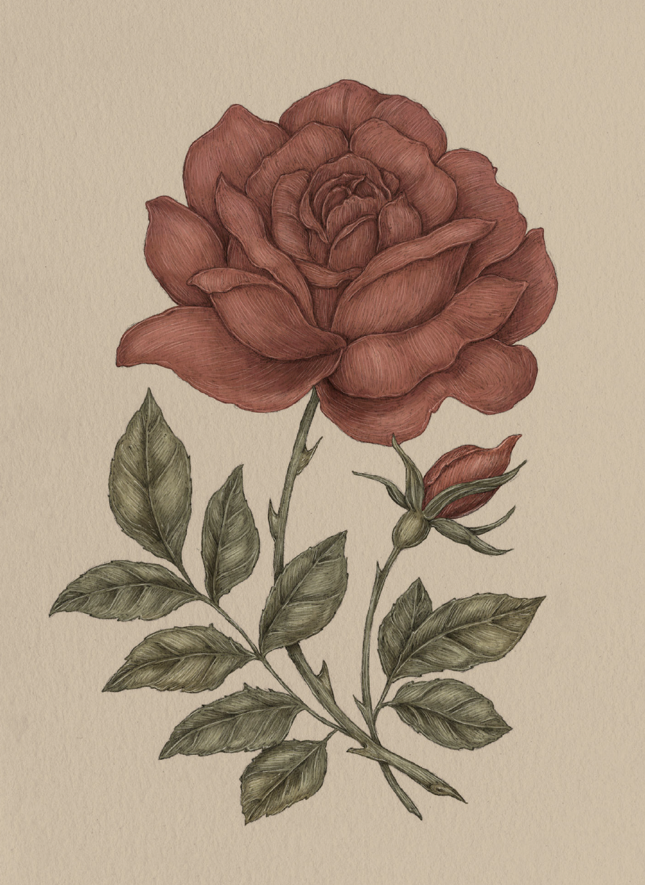

Plate ROSE
The Language of Flowers
Rose Study

Rose
Rosa
Definition: A flower associated in floriography with love.
Meaning
Love
Origin
The rose flower has been closely linked to love in many cultures throughout history. Its lushly layered
petals and sweet aroma may explain why. For the Victorians, the color of the rose indicated the level
of affection: a white rose was for innocent love; a blush pink rose was for a blossoming romance; and
a deep red rose for passion. In Greek myth, Chloris, the goddess of flowers, is said to have turned a
beautiful, dead nymph into a rose. She invited Apollo to warm the bloom, Aphrodite to lend it her
beauty, Dionysus to add sweet nectar, and the three Graces to supply charm, joy, and magnificence.
Chloris called the rose the "Queen of Flowers."
Pair With
- Baby's Breath for a wedding celebration
- Cornflower for hope in a new romantic pursuit